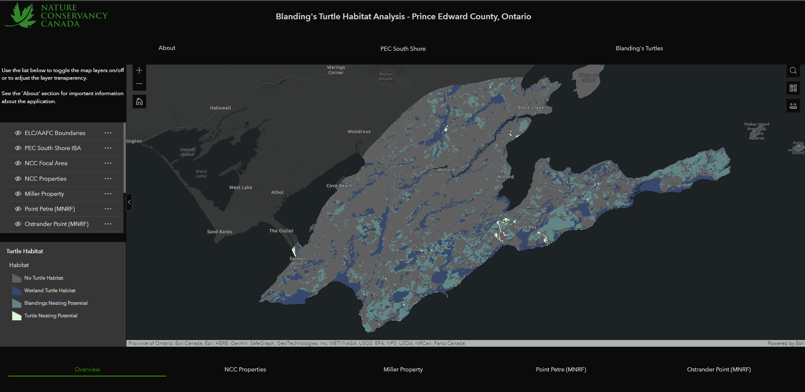

The first phase of the project involved acquiring and parsing through land cover and boundary spatial data from NCC and open-source data. SOLRIS and AAFC data was used to fill the areas outside of the NCC properties. The following is our workflow in how we processed this data into a readable and clear format.
After the data was aquired it was organized into a clean file geodatabase for the NCC to use in the future. The data was organized into 5 feature datasets. Any information the was not nessecary to the project was removed.
Blandings Turtles travel on average 100 metres to 250 metres from their wetland habitat to their nesting habitat. We decided to create a layer for our map that shows the nesting habitat within that range from the wetland habitat. The workflow on how this was done is shown below.
The web application was built using ArcGIS Expeirence builder. The application was design to be easily used by any user. Below is a screenshot of the app when it is forst open.
